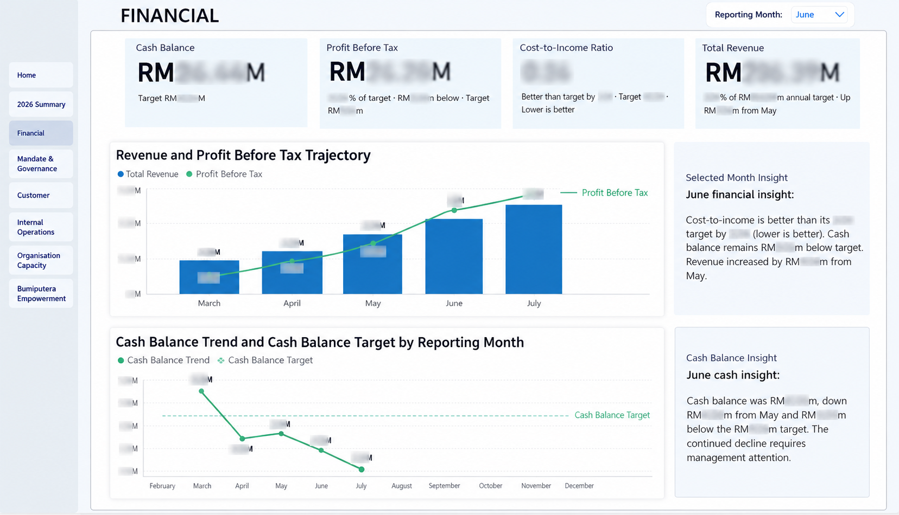
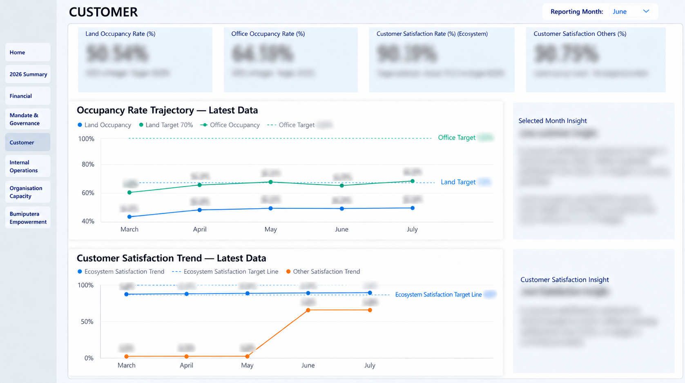

Clean and prepare the data
I used Power Query for data cleaning and preparation before loading the reporting data into the model. This formed the preparation stage of the dashboard workflow.
Hani / Data portfolio / Malaysia
Data Engineer & Data Analyst. I build data pipelines, automate reporting, and create Power BI dashboards that make complex information easier to understand.
Featured work / Business intelligence

01 / The purpose
The dashboard brings corporate performance indicators into a structured reporting interface. It supports reviewing KPI achievement, comparing results across perspectives, and identifying indicators that require attention.
I worked across the reporting workflow: cleaning data in Power Query, developing the data model, creating DAX measures, and designing the dashboard experience in Power BI.
KPI achievement, performance trends, and financial and customer perspectives.
A Power BI dashboard with an executive overview and dedicated reporting views.
02 / My approach
I used Power Query for data cleaning and preparation before loading the reporting data into the model. This formed the preparation stage of the dashboard workflow.
I developed the Power BI data model to support the dashboard’s reporting views and calculations. The model connects the preparation work with the measures and visuals used in the report.
I created DAX measures for the dashboard’s KPI reporting. These calculations support the performance summaries and indicators presented in the report.
I designed the dashboard layout, visual hierarchy, and reporting pages. The executive view combines trends, perspective contributions, and KPI status, while dedicated financial and customer views provide more focused analysis.
03 / Dashboard gallery
Explore the dashboard’s reporting views. Select any screenshot to open the full image in a new tab.
A consolidated view of KPI achievement, performance trends, and indicators requiring attention. The layout brings summary indicators, perspective contributions, and detailed status reporting together.

A dedicated financial view combining KPI summaries with revenue, profit, and cash balance trends. Supporting commentary sits alongside the charts to provide reporting context.

A focused view of customer-related KPI reporting and performance monitoring, with summary indicators, trend charts, and supporting commentary.
Selected figures are obscured in the screenshots. This case study focuses on dashboard structure and my technical contribution.
04 / What I delivered
Power Query data cleaning and a Power BI data model supporting the dashboard.
DAX measures supporting performance indicators and dashboard reporting.
An executive overview and focused financial and customer reporting views.
05 / More projects
Power BI analysis of utility consumption, usage trends, and operational reporting.
A public case study is not yet linked.
AWS S3 ingestion into Snowflake, with Bronze, Silver, and Gold layers for validation, transformation, and analytics-ready datasets.
A public implementation is not yet linked.
Python workflows for recurring data processing and reporting tasks.
Source code and measured outcomes are not currently published here.
06 / About & experience
I’m a data professional based in Malaysia, with a focus on data engineering, analytics, and business intelligence.
My experience includes Power BI dashboard development, Power Query data cleaning, data model development, DAX measures, Snowflake pipelines, SQL transformations, and Python reporting automation.
I enjoy connecting the preparation and engineering behind data with a clear reporting experience people can use.
07 / Technical skills
SQL · Snowflake · AWS S3 · ETL / ELT · Data warehousing
Power BI · DAX · Power Query · Data modeling · Data visualization
Python · Data processing · Reporting automation · Google Apps Script
08 / Get in touch
I’m interested in opportunities across Data Engineering, Data Analytics, and Business Intelligence. Explore my public work on GitHub.